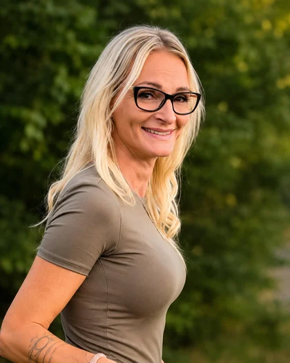

Seniorům
– zejména těm, pro které je cestování do kadeřnictví náročné nebo kteří potřebují péči přímo ve svém domácím prostředí.

Jsme neziskový spolek poskytující profesionální kadeřnické služby v domácnostech na Třebíčsku. Vedle běžných zákazníků se zaměřujeme hlavně na seniory, lidi s omezenou mobilitou a osoby pečující o své blízké, kterým nabízíme možnost individuálně zvýhodněné péče.
Příjmy z běžné kadeřnické činnosti jsou hlavním zdrojem financování této péče. Veškeré získané prostředky využíváme výhradně na provoz spolku a naplňování jeho poslání.
Ne každý má možnost jednoduše zajít do kadeřnictví. Pro seniory, lidi s omezenou mobilitou nebo rodiče pečující o děti se zdravotním postižením může být i běžná návštěva salonu komplikovaná.
S těmito situacemi se při své dlouholeté kadeřnické praxi setkává i Lucie Tesařová, která již řadu let poskytuje služby zákazníkům přímo v jejich domácnostech.
Střihnuto vzniklo proto, aby na tuto dosavadní činnost navázalo a umožnilo ji dále rozvíjet. Naším cílem je poskytovat profesionální kadeřnickou péči také lidem, pro které je z různých důvodů obtížně dostupná.
Naše zvýhodněná péče je určena především lidem, pro které je návštěva běžného kadeřnictví obtížná nebo finančně nedostupná.
– zejména těm, pro které je cestování do kadeřnictví náročné nebo kteří potřebují péči přímo ve svém domácím prostředí.
– osobám, kterým zdravotní stav nebo jiné omezení komplikují návštěvu běžného salonu.
– například rodičům dětí se zdravotním postižením nebo lidem, kteří dlouhodobě pečují o své blízké a nemohou jednoduše odejít z domova.
Každou žádost o zvýhodněnou péči posuzujeme individuálně, s ohledem na konkrétní situaci klienta a aktuální možnosti spolku.
Střihnuto je neziskový spolek, jehož hlavním účelem je zpřístupňovat profesionální kadeřnickou péči lidem, pro které je běžně obtížně dostupná.
Běžné placené kadeřnické služby nejsou naším hlavním cílem, ale prostředkem k financování této činnosti. Příjmy z nich slouží k zajištění provozu spolku a poskytování individuálně zvýhodněné péče, v některých případech i zcela bezplatné.
Veškeré získané prostředky využíváme výhradně k naplňování poslání spolku a zajištění jeho fungování. Naším cílem není podnikání za účelem rozdělování zisku, ale dlouhodobě udržitelný způsob financování společensky prospěšné činnosti.
Poskytujeme kompletní dámské, pánské i dětské kadeřnické služby přímo v domácnostech zákazníků.
Od běžného stříhání a úpravy účesu až po barvení a další kadeřnické úkony. Rozsah služeb vždy přizpůsobujeme individuálním požadavkům zákazníka a možnostem domácího prostředí.
Působíme na území celého okresu Třebíč. Konkrétní služby, jejich cenu a termín návštěvy domlouváme předem na základě individuální poptávky.
Zvýhodněnou kadeřnickou péči poskytujeme podle individuálních potřeb a životní situace klienta. Rozsah zvýhodnění stanovujeme vždy na základě konkrétních okolností a v některých případech může být služba zcela bezplatná.
Naše kapacity jsou omezené a vedle nových zájemců se věnujeme také stávajícím klientům. Možnosti poskytnutí služby proto závisí na aktuálních časových, personálních a finančních možnostech spolku.
Každou žádost posuzujeme individuálně. Přestože bychom rádi vyhověli všem, není vždy možné zajistit péči každému zájemci nebo v požadovaném termínu.

Za poskytovanými kadeřnickými službami stojí Lucie Tesařová, profesionální kadeřnice s více než 25 lety praxe.
Vedle běžných zákazníků se dlouhodobě věnuje také lidem, pro které je návštěva kadeřnictví obtížná. Mezi její klienty patří například senioři, lidé s omezenou mobilitou nebo rodiče pečující o děti se zdravotním postižením.
Právě zkušenosti z této práce se staly základem pro vznik spolku Střihnuto, který umožňuje dosavadní činnost dále rozvíjet a poskytovat zvýhodněnou péči systematicky a dlouhodobě.
Kadeřnické služby poskytujeme v domácnostech zákazníků na území celého okresu Třebíč.
Přijíždíme za klienty do měst i menších obcí. Konkrétní termín a podmínky návštěvy domlouváme individuálně podle místa, požadovaných služeb a našich aktuálních kapacit.
Okres TřebíčMáte zájem o naše kadeřnické služby nebo se chcete informovat o možnosti individuálně zvýhodněné péče?
Vyplňte krátký kontaktní formulář a stručně nám popište, co potřebujete. Na základě vaší poptávky se s vámi spojíme a domluvíme další postup.
Kontaktovat nás můžete také přímo e-mailem.
Odesláním formuláře nám předáváte údaje potřebné k vyřízení vaší poptávky. Více informací najdete v Ochraně osobních údajů.